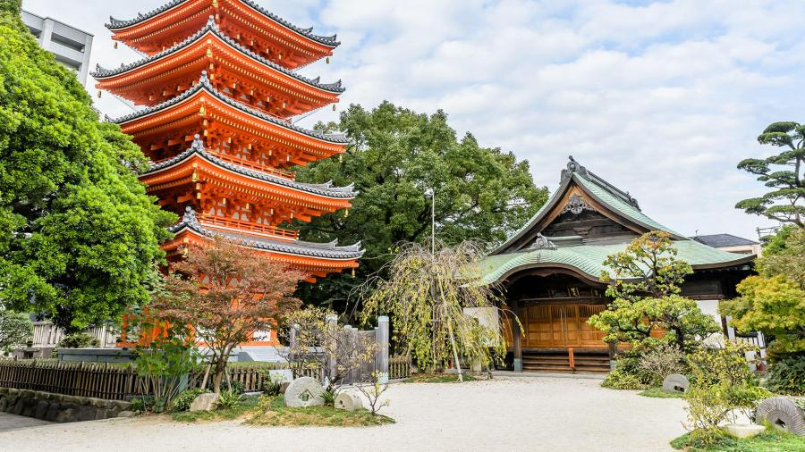

Why should you visit Japan?
When you give yourself an opportunity to travel anywhere in the world, you're leading yourself into a life-changing experience. You'll get to see the world on a whole new perspective and discover things you've never seen before. In Japan, there's a lot to explore and learn about the country itself. You'll be able to see the beautiful landscapes, learn more about their culture and lifestyle, and even build a passion for travelling! Below are some areas that you can explore witin the country.


- 